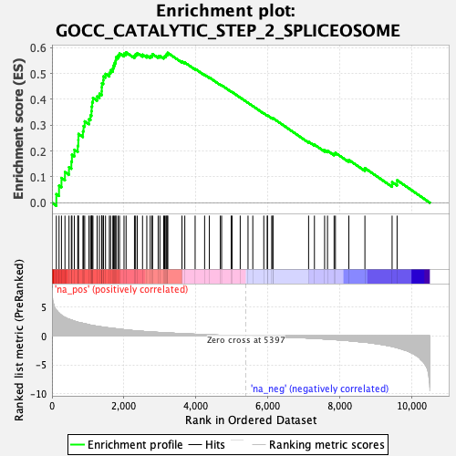
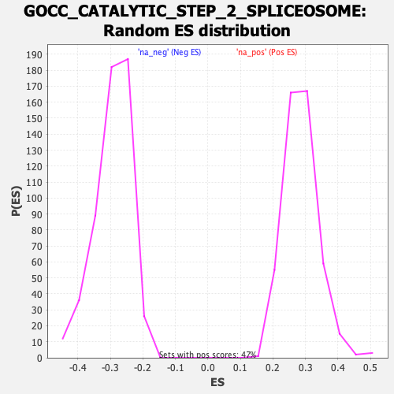

| Dataset | qlf.KOd4vsWTd4_gsea_score |
| Phenotype | NoPhenotypeAvailable |
| Upregulated in class | na_pos |
| GeneSet | GOCC_CATALYTIC_STEP_2_SPLICEOSOME |
| Enrichment Score (ES) | 0.5821168 |
| Normalized Enrichment Score (NES) | 2.0265002 |
| Nominal p-value | 0.0 |
| FDR q-value | 4.1345583E-4 |
| FWER p-Value | 0.045 |

| SYMBOL | RANK IN GENE LIST | RANK METRIC SCORE | RUNNING ES | CORE ENRICHMENT | |
|---|---|---|---|---|---|
| 1 | MAGOHB | 121 | 4.447 | 0.0334 | Yes |
| 2 | SNRPD3 | 196 | 3.959 | 0.0663 | Yes |
| 3 | SYNCRIP | 264 | 3.556 | 0.0958 | Yes |
| 4 | PRPF19 | 361 | 3.208 | 0.1191 | Yes |
| 5 | LSM2 | 473 | 2.901 | 0.1378 | Yes |
| 6 | LSM3 | 539 | 2.777 | 0.1596 | Yes |
| 7 | LSM7 | 555 | 2.735 | 0.1858 | Yes |
| 8 | RBM8A | 623 | 2.552 | 0.2052 | Yes |
| 9 | MAGOH | 717 | 2.381 | 0.2204 | Yes |
| 10 | HNRNPC | 732 | 2.354 | 0.2428 | Yes |
| 11 | PPIE | 736 | 2.352 | 0.2663 | Yes |
| 12 | SNRPD1 | 861 | 2.183 | 0.2765 | Yes |
| 13 | SNRPA1 | 878 | 2.159 | 0.2968 | Yes |
| 14 | HNRNPA3 | 910 | 2.116 | 0.3152 | Yes |
| 15 | SNRPD2 | 1029 | 1.943 | 0.3235 | Yes |
| 16 | U2AF1 | 1072 | 1.867 | 0.3384 | Yes |
| 17 | PPWD1 | 1098 | 1.835 | 0.3546 | Yes |
| 18 | EIF4A3 | 1104 | 1.827 | 0.3726 | Yes |
| 19 | SF3A3 | 1118 | 1.817 | 0.3897 | Yes |
| 20 | PPIL3 | 1139 | 1.794 | 0.4059 | Yes |
| 21 | CWC27 | 1256 | 1.671 | 0.4117 | Yes |
| 22 | BCAS2 | 1320 | 1.607 | 0.4219 | Yes |
| 23 | SRSF1 | 1383 | 1.557 | 0.4317 | Yes |
| 24 | ISY1 | 1385 | 1.556 | 0.4473 | Yes |
| 25 | SF3B3 | 1388 | 1.554 | 0.4628 | Yes |
| 26 | SNRPE | 1427 | 1.516 | 0.4745 | Yes |
| 27 | PABPC1 | 1432 | 1.509 | 0.4894 | Yes |
| 28 | HNRNPK | 1489 | 1.460 | 0.4988 | Yes |
| 29 | SNRPG | 1596 | 1.375 | 0.5025 | Yes |
| 30 | SNRNP40 | 1629 | 1.354 | 0.5132 | Yes |
| 31 | SRRM1 | 1693 | 1.306 | 0.5203 | Yes |
| 32 | PRPF4B | 1713 | 1.291 | 0.5316 | Yes |
| 33 | SNRPB | 1742 | 1.268 | 0.5417 | Yes |
| 34 | PNN | 1772 | 1.248 | 0.5515 | Yes |
| 35 | PRPF8 | 1781 | 1.244 | 0.5634 | Yes |
| 36 | SF3A1 | 1838 | 1.194 | 0.5701 | Yes |
| 37 | SNRPB2 | 1879 | 1.168 | 0.5780 | Yes |
| 38 | ALYREF | 2003 | 1.077 | 0.5771 | Yes |
| 39 | HNRNPA2B1 | 2061 | 1.035 | 0.5821 | Yes |
| 40 | HNRNPA1 | 2294 | 0.898 | 0.5689 | No |
| 41 | EFTUD2 | 2325 | 0.883 | 0.5750 | No |
| 42 | PLRG1 | 2372 | 0.863 | 0.5793 | No |
| 43 | SF3A2 | 2518 | 0.792 | 0.5734 | No |
| 44 | HNRNPU | 2637 | 0.745 | 0.5696 | No |
| 45 | DHX38 | 2732 | 0.701 | 0.5677 | No |
| 46 | HNRNPF | 2782 | 0.680 | 0.5699 | No |
| 47 | CWC22 | 2796 | 0.674 | 0.5754 | No |
| 48 | SNRNP200 | 2953 | 0.613 | 0.5667 | No |
| 49 | CACTIN | 3001 | 0.595 | 0.5682 | No |
| 50 | SF3B6 | 3107 | 0.559 | 0.5638 | No |
| 51 | WDR83 | 3133 | 0.551 | 0.5669 | No |
| 52 | HNRNPM | 3169 | 0.537 | 0.5690 | No |
| 53 | SRRM2 | 3177 | 0.534 | 0.5737 | No |
| 54 | CDC5L | 3216 | 0.520 | 0.5754 | No |
| 55 | SNRPF | 3217 | 0.519 | 0.5806 | No |
| 56 | PPIL1 | 3615 | 0.394 | 0.5465 | No |
| 57 | SF3B1 | 3694 | 0.371 | 0.5428 | No |
| 58 | BUD31 | 3981 | 0.295 | 0.5183 | No |
| 59 | DDX41 | 4245 | 0.227 | 0.4954 | No |
| 60 | SF3B2 | 4376 | 0.200 | 0.4849 | No |
| 61 | HNRNPH1 | 4682 | 0.128 | 0.4570 | No |
| 62 | RBMX | 4718 | 0.121 | 0.4548 | No |
| 63 | AQR | 4984 | 0.073 | 0.4302 | No |
| 64 | DDX5 | 5008 | 0.068 | 0.4287 | No |
| 65 | DDX23 | 5235 | 0.030 | 0.4073 | No |
| 66 | SNW1 | 5452 | -0.008 | 0.3866 | No |
| 67 | DHX35 | 5585 | -0.029 | 0.3743 | No |
| 68 | ZCCHC8 | 5891 | -0.078 | 0.3458 | No |
| 69 | PRPF6 | 5989 | -0.096 | 0.3375 | No |
| 70 | DHX8 | 5992 | -0.096 | 0.3383 | No |
| 71 | HNRNPR | 6111 | -0.116 | 0.3281 | No |
| 72 | SART1 | 6142 | -0.123 | 0.3265 | No |
| 73 | GPATCH1 | 6144 | -0.123 | 0.3276 | No |
| 74 | CWC15 | 7137 | -0.368 | 0.2362 | No |
| 75 | TFIP11 | 7299 | -0.418 | 0.2250 | No |
| 76 | CDC40 | 7582 | -0.522 | 0.2032 | No |
| 77 | CRNKL1 | 7663 | -0.555 | 0.2011 | No |
| 78 | XAB2 | 7846 | -0.630 | 0.1901 | No |
| 79 | RALY | 7883 | -0.647 | 0.1931 | No |
| 80 | FRG1 | 8256 | -0.822 | 0.1658 | No |
| 81 | RBM22 | 8703 | -1.090 | 0.1340 | No |
| 82 | SYF2 | 9459 | -1.812 | 0.0799 | No |
| 83 | SLU7 | 9598 | -2.035 | 0.0873 | No |
